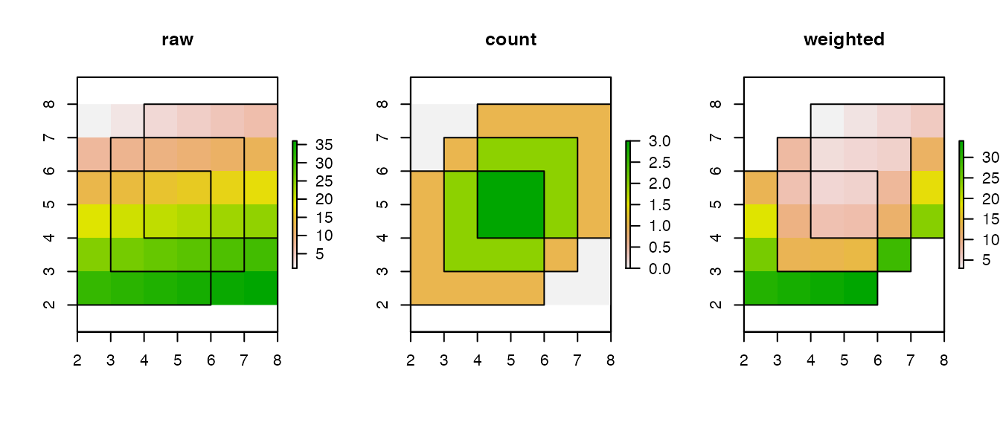
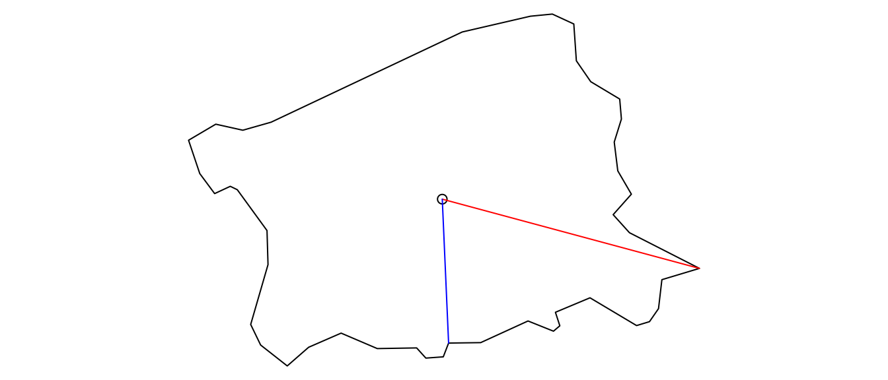

vignettes/spatial-utility-functions.Rmd
spatial-utility-functions.RmdThis package contains convenience functions for carrying out GIS operations that I have repeatedly encountered in my research. The following packages are used in this vignette:
The overlap.weight function allows you to weight the values of a raster cell by the inverse of the number of polygons that overlap the cell. This is useful when, e.g., calculating the population of ethnic group settlement areas when different group settlement areas can overlap one another. The count argument allows the count of overlapping polygons to be returned instead of the weighted cell values. Note that this converts any cells not covered by at least one polygon to NA.
## create three overlapping squares
polys_t <- st_sfc(list(st_polygon(list(rbind(c(2,2), c(2,6), c(6,6),
c(6,2), c(2, 2)))),
st_polygon(list(rbind(c(8,8), c(4,8), c(4,4),
c(8,4), c(8,8)))),
st_polygon(list(rbind(c(3,3), c(3,7), c(7,7),
c(7,3), c(3,3))))),
crs = 4326)
## create raster
raster_t <- raster(nrows = 6, ncols = 6, xmn = 2, xmx = 8, ymn = 2, ymx = 8,
vals = 1:36, crs = CRS(st_crs(polys_t)$proj4string))
## set plotting parameters
par(mfrow = c(1, 3))
## plot raw raster values
plot(raster_t, main = 'raw')
plot(polys_t, add = TRUE)
## plot count of overlapping polygons
plot(overlap.weight(raster_t, polys_t, count = TRUE), main = "count")
plot(polys_t, add = TRUE)
## plot overlap-weighted raster values
plot(overlap.weight(raster_t, polys_t), main = "weighted")
plot(polys_t, add = TRUE)
The projectUTM function converts any sf or sfc objects in longitude, latitude decimal degrees to the UTM zone where the majority of the data lie. This function accounts for North and South UTM zones as well.
## read in North Carolina shapefile
nc <- st_read(system.file("shape/nc.shp", package="sf"))
#> Reading layer `nc' from data source `/Users/runner/work/_temp/Library/sf/shape/nc.shp' using driver `ESRI Shapefile'
#> Simple feature collection with 100 features and 14 fields
#> geometry type: MULTIPOLYGON
#> dimension: XY
#> bbox: xmin: -84.32385 ymin: 33.88199 xmax: -75.45698 ymax: 36.58965
#> geographic CRS: NAD27
## transform crs to WGS84 and inspect CRS
nc <- st_transform(nc, st_crs(4326))
st_crs(nc)
#> Coordinate Reference System:
#> User input: EPSG:4326
#> wkt:
#> GEOGCRS["WGS 84",
#> DATUM["World Geodetic System 1984",
#> ELLIPSOID["WGS 84",6378137,298.257223563,
#> LENGTHUNIT["metre",1]]],
#> PRIMEM["Greenwich",0,
#> ANGLEUNIT["degree",0.0174532925199433]],
#> CS[ellipsoidal,2],
#> AXIS["geodetic latitude (Lat)",north,
#> ORDER[1],
#> ANGLEUNIT["degree",0.0174532925199433]],
#> AXIS["geodetic longitude (Lon)",east,
#> ORDER[2],
#> ANGLEUNIT["degree",0.0174532925199433]],
#> USAGE[
#> SCOPE["unknown"],
#> AREA["World"],
#> BBOX[-90,-180,90,180]],
#> ID["EPSG",4326]]
## project to UTM and inspect CRS
st_crs(projectUTM(nc))
#> Coordinate Reference System:
#> User input: +proj=utm +zone=17
#> wkt:
#> PROJCRS["unknown",
#> BASEGEOGCRS["unknown",
#> DATUM["World Geodetic System 1984",
#> ELLIPSOID["WGS 84",6378137,298.257223563,
#> LENGTHUNIT["metre",1]],
#> ID["EPSG",6326]],
#> PRIMEM["Greenwich",0,
#> ANGLEUNIT["degree",0.0174532925199433],
#> ID["EPSG",8901]]],
#> CONVERSION["UTM zone 17N",
#> METHOD["Transverse Mercator",
#> ID["EPSG",9807]],
#> PARAMETER["Latitude of natural origin",0,
#> ANGLEUNIT["degree",0.0174532925199433],
#> ID["EPSG",8801]],
#> PARAMETER["Longitude of natural origin",-81,
#> ANGLEUNIT["degree",0.0174532925199433],
#> ID["EPSG",8802]],
#> PARAMETER["Scale factor at natural origin",0.9996,
#> SCALEUNIT["unity",1],
#> ID["EPSG",8805]],
#> PARAMETER["False easting",500000,
#> LENGTHUNIT["metre",1],
#> ID["EPSG",8806]],
#> PARAMETER["False northing",0,
#> LENGTHUNIT["metre",1],
#> ID["EPSG",8807]],
#> ID["EPSG",16017]],
#> CS[Cartesian,2],
#> AXIS["(E)",east,
#> ORDER[1],
#> LENGTHUNIT["metre",1,
#> ID["EPSG",9001]]],
#> AXIS["(N)",north,
#> ORDER[2],
#> LENGTHUNIT["metre",1,
#> ID["EPSG",9001]]]]Projection of the North Carolina polygons can be further seen by plotting them.
The point.poly.dist function computes the maximum or minimum distance from a point or set of points to a polygon. It correctly calculates distances for both geographic and projected data.
## create north carolina centroids
nc_centroids <- st_centroid(nc)
#> Warning in st_centroid.sf(nc): st_centroid assumes attributes are constant over
#> geometries of x
#> Warning in st_centroid.sfc(st_geometry(x), of_largest_polygon =
#> of_largest_polygon): st_centroid does not give correct centroids for longitude/
#> latitude data
## calculate maximum distance
point.poly.dist(nc_centroids[53,]$geometry, nc[53,]$geometry, max = TRUE)
#> Loading required namespace: geosphere
#> 33561.23 [m]The following illustration depicts the line connecting the centroid of the polygon to the farthest point on the polygon (red) and the nearest point on the polygon (blue).
nc_points <- st_geometry(nc[53,]) %>%
st_cast('POINT')
farthest_ind <- st_distance(nc_points, nc_centroids[53,]) %>%
which.max()
farthest_point <- rbind(st_coordinates(nc_points[farthest_ind,]),
st_coordinates(nc_centroids[53,])) %>%
st_linestring()
nearest_ind <- st_distance(nc_points, nc_centroids[53,]) %>%
which.min()
nearest_point <- rbind(st_coordinates(nc_points[nearest_ind,]),
st_coordinates(nc_centroids[53,])) %>%
st_linestring()
## plot
par(mar = rep(0,4))
plot(nc[53,]$geometry)
plot(nc_centroids[53,]$geometry, add = TRUE)
plot(farthest_point, add = TRUE, col = 'red')
plot(nearest_point, add = TRUE, col = 'blue')
Carrying out the same calculations using built-in sf functions takes roughly twice as long to execute.
microbenchmark::microbenchmark(pk = point.poly.dist(nc_centroids[53,]$geometry,
nc[53,]$geometry, max = TRUE),
sf = st_distance(st_cast(st_geometry(nc[53,]),
'POINT')[farthest_ind],
nc_centroids[53,]),
times = 100)
#> Unit: milliseconds
#> expr min lq mean median uq max neval
#> pk 6.180192 6.370976 6.69384 6.483332 6.656749 13.28557 100
#> sf 11.672243 11.946050 12.55123 12.104901 12.356514 17.76061 100